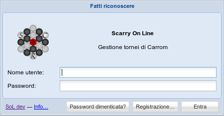

Il pannello di autenticazione¶
Autenticazione¶
Innanzitutto bisogna autenticarsi.
Ehi, ma che diavolo… ⁉⁈
SoL è un'applicazione client/server, composta cioè da due componenti. Da un lato c'è il
client, una applicazione eseguita all'interno di un moderno browser web grafico come
Firefox; questa applicazione comunica con un server che effettivamente legge e modifica il
database e che implementa la cosiddetta business logic.
Le due parti comunicano tra loro attraverso una connessione, che può essere sia locale, dove entrambe le parti vengono eseguite da una singola macchina come due diversi programmi che girano in parallelo, piuttosto che una connessione di rete, dove ci sono due (o più) computer coinvolti, collegati a una LAN o addirittura tramite Internet.
Questo consente tre diversi scenari:
il caso più semplice, una macchina sola a sè stante, senza alcuna connessione, magari solo una stampante: tutto si svolge su questa singola stazione;
alcuni computer connessi attraverso una
LAN, uno dei quali funge da server, dove si collegano uno o più client: immaginate di dover organizzare il Campionato Europeo e di voler dare la possibilità ai giornalisti presenti di consultare l'andamento della gara direttamente dal loro laptop, magari collegato alla rete wireless locale…il server è accessibile tramite Internet, quindi dall'esterno: magari solo per poter mostrare il campionato del vostro club, o addirittura per fornire un servizio on-line e consentire ad altre persone di organizzarsi e gestirsi il loro.
Quindi, per tornare alla domanda di partenza: sì, può essere un po' una noia inserire le proprie credenziali, ma mi sembrano un giusto pegno a fronte di queste possibilità.
Utente amministratore e utente ospite¶
SoL prevede due speciali utenti che non sono registrati nella Gestione utenti ma vengono
configurati esternamente all'applicazione, in un file di configurazione.
Il più importante è l'amministratore del sistema, in grado di fare qualsiasi cosa e in particolare di assegnare e/o modificare le password di accesso degli altri utenti.
Suggerimento
In una istanza privata di SoL, non accessibile dall'esterno, è possibile usare
esclusivamente l'utente amministratore per inserire e gestire tutti i dati, magari
assegnandogli una password semplice e mnemonica.
Al contrario, in una istanza pubblica si raccomanda di assegnare una password non banale a questo utente e di mantenerla segreta, usando l'account appunto solo a scopi di amministrazione.
L'altro utente speciale è l'ospite, previsto primariamente a scopo dimostrativo: dal punto di vista dell'applicazione viene trattato come qualsiasi utente ordinario, ma non gli è consentito di memorizzare in maniera permanente nessuna delle modifiche che eventualmente apporta.
Entrambi questi utenti sono gestiti nel file di configurazione dell'applicazione, nella sezione
[app:main]. Ad esempio:
sol.admin.user = admin
sol.admin.password = UnaBellaPasswordUnPòStrana
#sol.guest.user = guest
#sol.guest.password = guest
che usa “admin” come nome di login per l'utente di amministrazione e gli assegna una password
abbastanza sicura, mentre disabilita l'utente ospite (il carattere # nel file di
configurazione introduce un commento, cioè il carattere stesso e la parte rimanente della
riga vengono ignorati).
Responsabilità¶
Tutte le entità di primo livello, cioè campionati, club, giocatori, tornei e valutazioni, appartengono o a un certo utente oppure all'amministratore del sistema: questo significa che l'utente è responsabile dell'entità, che può essere modificata o cancellata solo da lui[*].
Di default i nuovi contenuti sono assegnati all'utente che li inserisce.
Questo è particolarmente utile in una istanza di SoL pubblica, dove più di una persona può
essere abilitata a inserire e gestire tornei di Carrom, anche nello stesso momento, da posti
diversi nel mondo: anche se chiunque può vedere le modifiche apportate dagli altri, non possono
interferire in alcun modo.
La responsabilità di una entità può essere riassegnata in qualunque momento a un utente diverso, sia dal possessore corrente oppure dall'amministratore. Ovviamente ciò significa che il responsabile precedente non potrà più modificarne il contenuto.
Auto registrazione¶
Dalla versione 4 di SoL è possibile crearsi un nuovo account in modo autonomo, senza doverlo
necessariamente richiedere a un utente pre-esistente.
Il processo di registrazione avviene in due fasi:
premendo il pulsante Registrati… si presenterà un modulo da compilare che richiede un indirizzo email, una password e il nome e cognome del nuovo utente: alla conferma dei dati il sistema invierà un messaggio all'indirizzo email specificato;
il messaggio contiene un link che deve essere visitato entro due giorni dall'invio al fine di completare la procedura di registrazione e confermare il nuovo account: in questo modo il sistema accerta la validità dell'indirizzo email specificato.
Una volta confermato il nuovo account, sarà possibile accedere al sistema usando l'indirizzo email come Nome utente e inserendo la password specificata nel modulo di registrazione.
Reimpostazione password¶
Càpita di dimenticare la propria password e anche in questo caso il processo di reimpostazione è composto da due fasi:
premendo il pulsante Password dimenticata? viene chiesto l'indirizzo email dell'utente di cui si vuole reimpostare la password: alla conferma il sistema invierà un messaggio all'indirizzo specificato;
il messaggio contiene un link che deve essere visitato entro due giorni dall'invio al fine di completare la procedura inserendo la nuova password per l'account.
Nel caso in cui si volesse semplicemente rinnovare la propria password, conoscendo quella attuale, è possibile farlo scegliendo la voce Password… nel menu principale dell'applicazione.